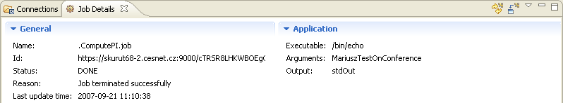
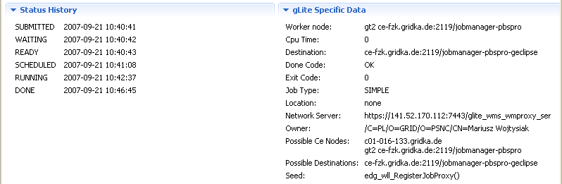

How to implement MY details shown in view Job Details?
Every submitted job can have information describing the job status on the Grid like current status, used resources, credentials etc.
This data is grouped into:
General (common) details:
Middleware specific details:
For new implementing middleware, the Job Details view shows only General details. To show details that are specific to a new middleware, implement the following extension point:
If job with specified jobClass and specified jobStatusClass is selected in views 'Grid Projects' or 'Jobs', then this extension point will be used to show job details.
eu.geclipse.ui.views.jobdetails.IJobDetailsFactoryeu.geclipse.ui.views.jobdetails.IJobDetailsSectionJobTextDetail.